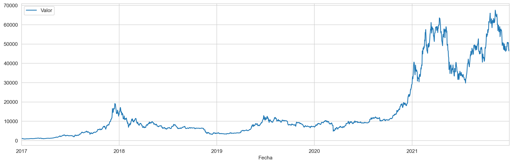
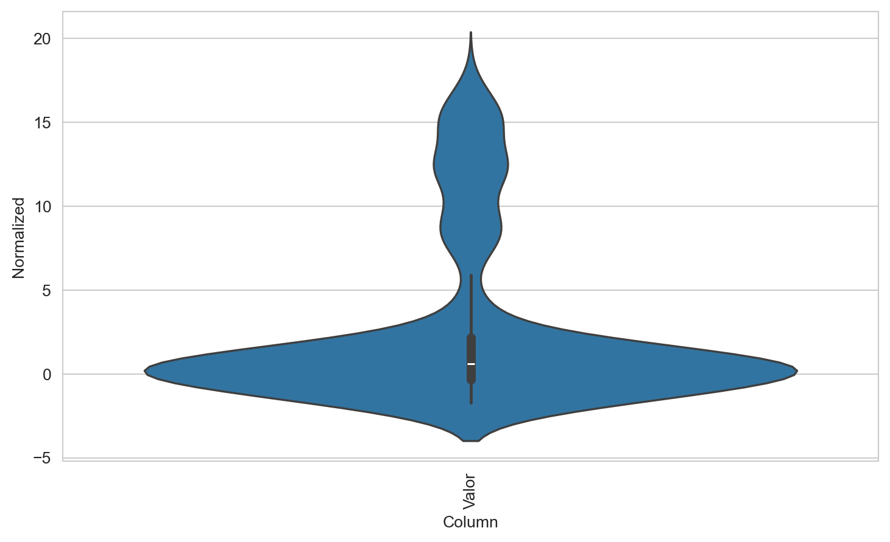
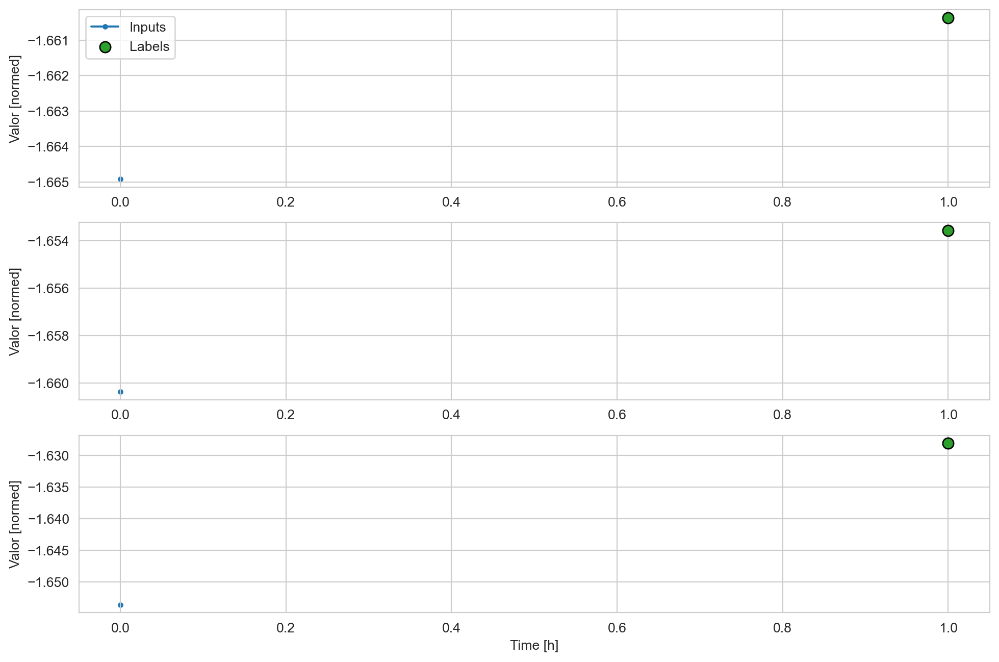
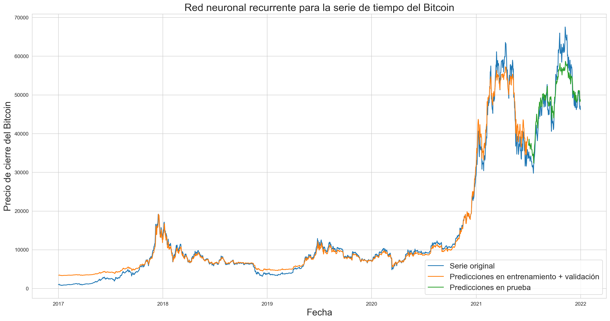
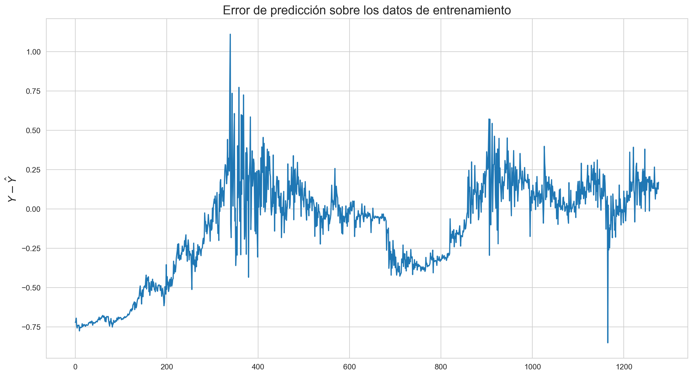
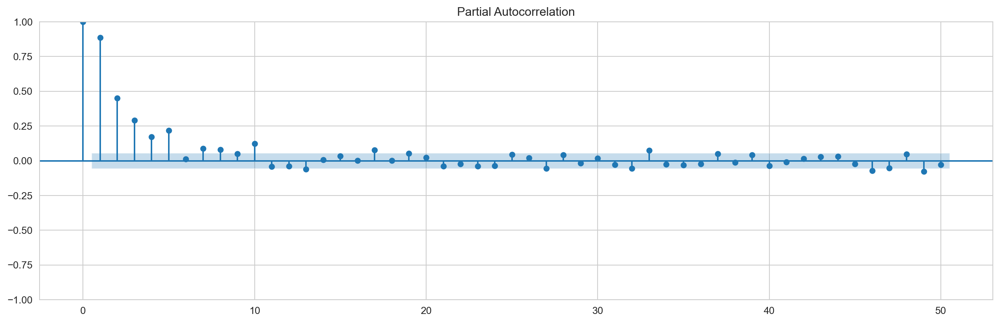
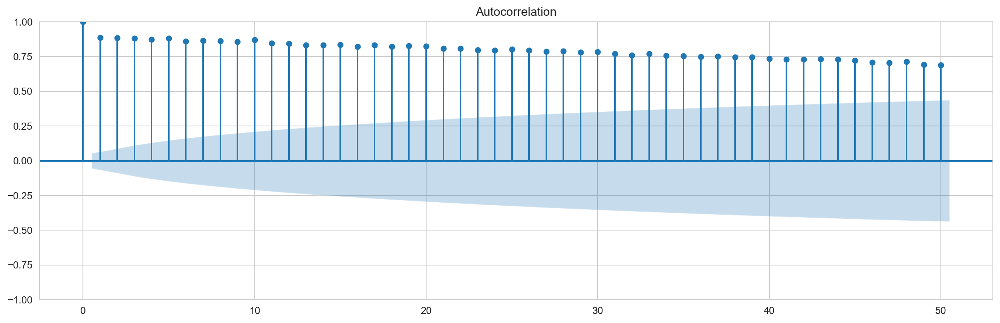
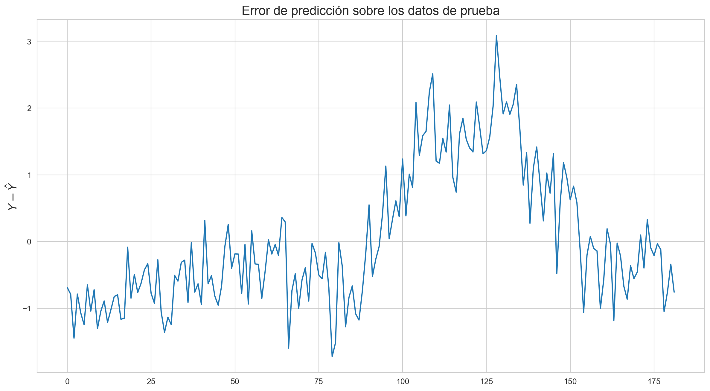
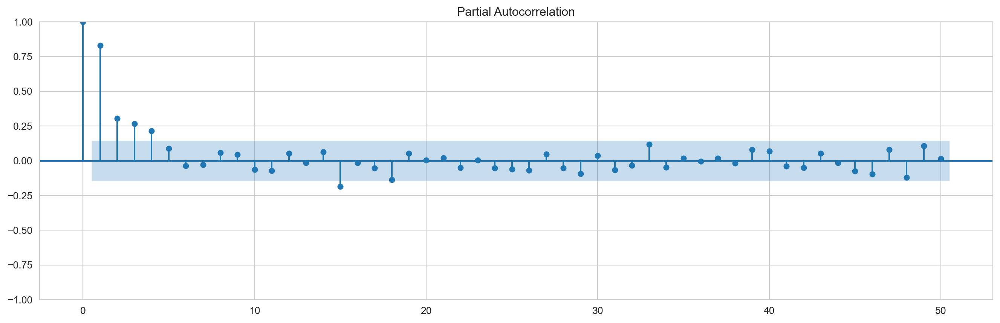
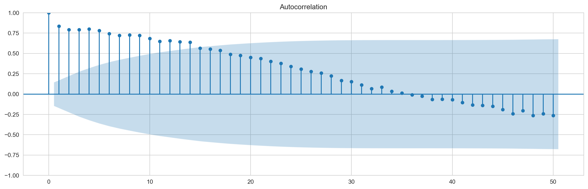

features_considered = ['Valor'] # la variable a usar en la predicción es ella misma
Code
features = Bitcoin[features_considered] # solo se usará la variable Total en la predicciónfeatures.index = Bitcoin['Fecha'] # variable que indica el tiempo (la serie es mensual)features
Code
features.plot(subplots =True) # gráfico de la serie de tiempo
array([<Axes: xlabel='Fecha'>], dtype=object)

Code
column_indices = {name: i for i, name inenumerate(features.columns)}n =len(features)train_df = features[0:int(n*0.7)]val_df = features[int(n*0.7):int(n*0.9)]test_df = features[int(n*0.9):]num_features = features.shape[1]
plt.figure(figsize=(9, 5))ax = sns.violinplot(x ='Column', y ='Normalized', data = df_std)_ = ax.set_xticklabels(features.keys(), rotation=90)

0.2 Definición de clases y funciones para el problema de aprendizaje automático
Code
class WindowGenerator():def__init__(self, input_width, label_width, shift, train_df=train_df, val_df=val_df, test_df=test_df, label_columns=None):# Store the raw data.self.train_df = train_dfself.val_df = val_dfself.test_df = test_df# Work out the label column indices.self.label_columns = label_columnsif label_columns isnotNone:self.label_columns_indices = {name: i for i, name inenumerate(label_columns)}self.column_indices = {name: i for i, name inenumerate(train_df.columns)}# Work out the window parameters.self.input_width = input_widthself.label_width = label_widthself.shift = shiftself.total_window_size = input_width + shiftself.input_slice =slice(0, input_width)self.input_indices = np.arange(self.total_window_size)[self.input_slice]self.label_start =self.total_window_size -self.label_widthself.labels_slice =slice(self.label_start, None)self.label_indices = np.arange(self.total_window_size)[self.labels_slice]def__repr__(self):return'\n'.join([f'Total window size: {self.total_window_size}',f'Input indices: {self.input_indices}',f'Label indices: {self.label_indices}',f'Label column name(s): {self.label_columns}'])
0.3 Split
Dada una lista de entradas consecutivas, el método split_window las convertirá en una ventana de entradas y una ventana de etiquetas.
Code
def split_window(self, features): inputs = features[:, self.input_slice, :] labels = features[:, self.labels_slice, :]ifself.label_columns isnotNone: labels = tf.stack( [labels[:, :, self.column_indices[name]] for name inself.label_columns], axis=-1)# Slicing doesn't preserve static shape information, so set the shapes# manually. This way the `tf.data.Datasets` are easier to inspect. inputs.set_shape([None, self.input_width, None]) labels.set_shape([None, self.label_width, None])return inputs, labelsWindowGenerator.split_window = split_window
@propertydef train(self):returnself.make_dataset(self.train_df)@propertydef val(self):returnself.make_dataset(self.val_df)@propertydef test(self):returnself.make_dataset(self.test_df)@propertydef example(self):"""Get and cache an example batch of `inputs, labels` for plotting.""" result =getattr(self, '_example', None)if result isNone:# No example batch was found, so get one from the `.train` dataset result =next(iter(self.train))# And cache it for next timeself._example = resultreturn resultWindowGenerator.train = trainWindowGenerator.val = valWindowGenerator.test = testWindowGenerator.example = example
1 Definir las gráficas para visualizar lo que se desea predecir en términos de las entradas
# Definimos número de épocas necesarias y funciones de pérdidaMAX_EPOCHS =20def compile_and_fit(model, window, patience=2): #patiences como el número de épocas que espera antes de parar# Para evitar sobreajuste early_stopping = tf.keras.callbacks.EarlyStopping(monitor='val_loss', patience=patience, mode='min') model.compile(loss=tf.losses.MeanSquaredError(), optimizer=tf.optimizers.Adam(), metrics=[tf.metrics.MeanAbsoluteError()]) history = model.fit(window.train, epochs=MAX_EPOCHS, validation_data=window.val, callbacks=[early_stopping])return history
2.1 Configuración del modelo
Con la información del últimos día, predecir el valor de la serie 1 paso adelante.
for batch in w1.train.take(1): inputs_train,targets_train = batchprint("Input shape:", inputs_train.numpy().shape)print("Target shape:", targets_train.numpy().shape)
Input shape: (32, 1, 1)
Target shape: (32, 1, 1)
Code
for batch in w1.val.take(1): inputs_val,targets_val = batchprint("Input shape:", inputs_val.numpy().shape)print("Target shape:", targets_val.numpy().shape)
Code
for batch in w1.test.take(1): inputs_test,targets_test = batchprint("Input shape:", inputs_val.numpy().shape)print("Target shape:", targets_val.numpy().shape)
Code
w1.train.element_spec
Code
w1.plot()

Code
## Ejemplo de los lotes en los datos de entrenamientoi=1for batch in w1.train.take(1): inputs, targets = batchprint("Covariable o input",i,inputs)print("Respuesta o etiqueta",i,targets) i=i+1
Code
## Ejemplo de los lotes en los datos de validacióni=1for batch in w1.val.take(1): inputs, targets = batchprint("Covariable o input",i,inputs)print("Respuesta o etiqueta",i,targets) i=i+1
Code
## Ejemplo de los lotes en los datos de pruebai=1for batch in w1.test.take(10): inputs, targets = batchprint("Covariable o input",i,inputs)print("Respuesta o etiqueta",i,targets) i=i+1
# Get the top 2 models.models_LSTM = tuner_LSTM.get_best_models(num_models=2)best_model_LSTM = models_LSTM[0]# Build the model.# Needed for `Sequential` without specified `input_shape`.best_model_LSTM.build(input_shape=(32, 1, 1))best_model_LSTM.summary()
train_plus_val=w1.train.concatenate(w1.val)###verificar que en efecto
Code
# Get the top 2 hyperparameters.best_hps_LSTM = tuner_LSTM.get_best_hyperparameters(5)# Build the model with the best hp.callback=tf.keras.callbacks.EarlyStopping(monitor="loss",patience=0)model_LSTM = build_model(best_hps_LSTM[0])# Fit with the entire dataset.model_LSTM.fit(train_plus_val, epochs=20,callbacks=[callback])
Una vez re-entrenado el modelo con el conjunto de hiperparámetros hallado anteriormente, se obtiene el siguiente MSE en en conjunto de entrenamiento + validación:
Una vez que se hacen las predicciones sobre el conjunto de prueba, se hace la comparación con los valores reales y se obtiene el siguiente RECM (en la escala original):
plt.plot(true_series_final)plt.plot(prediction_test_final)plt.legend(['Respesta real','Predicción de la Respuesta'],loc='lower right', fontsize=15)plt.ylabel('Y y $\hat{Y}$ en conjunto de prueba', fontsize=15)plt.title('Red neuronal recurrente: Predicciones sobre el conjunto de prueba', fontsize=20)
Text(0.5, 1.0, 'Red neuronal recurrente: Predicciones sobre el conjunto de prueba')
plt.figure(figsize=(20,10))plt.title('Red neuronal recurrente para la serie de tiempo del Bitcoin', fontsize=20)plt.xlabel('Fecha', fontsize=18)plt.ylabel('Precio de cierre del Bitcoin', fontsize=18)plt.plot(Bitcoin['Fecha'], Bitcoin['Valor'])plt.plot(Bitcoin['Fecha'][1:1642], train_val_predict)plt.plot(Bitcoin['Fecha'][1644:1826], predicciones_prueba)plt.legend(['Serie original', 'Predicciones en entrenamiento + validación', 'Predicciones en prueba'], loc='lower right', fontsize=15)plt.show()

2.4 Errores de Predicción del Modelo
2.4.1 Sobre el conjunto de entrenamiento
Code
labels_train = np.concatenate([y for x, y in w1.train], axis=0)labels_train.shape
fig = plt.figure(figsize=(15,8))plt.plot(eror_prediction_train)plt.ylabel('$Y-\hat{Y}$', fontsize=14)plt.title('Error de predicción sobre los datos de entrenamiento', fontsize=16);

Code
graficapacf=plot_pacf(eror_prediction_train,lags=50,method='ldbiased') ###Se puede usar también em method='ywmle'graficaacf=plot_acf(eror_prediction_train,lags=50,adjusted='ldbiased')


#### Sobre el conjunto de prueba
Code
labels_test = np.concatenate([y for x, y in w1.test], axis=0)prediccion_conjunto_test=model_LSTM.predict(w1.test, verbose=1)prediccion_conjunto_test=prediccion_conjunto_test.reshape(182,1,1)eror_prediction_test=labels_test-prediccion_conjunto_testeror_prediction_test=eror_prediction_test.reshape(eror_prediction_test.shape[0])
Code
fig1 = plt.figure(figsize=(15,8))plt.plot(eror_prediction_test)plt.ylabel('$Y-\hat{Y}$', fontsize=14)plt.title('Error de predicción sobre los datos de prueba', fontsize=16)
Text(0.5, 1.0, 'Error de predicción sobre los datos de prueba')

Code
graficapacf=plot_pacf(eror_prediction_test,lags=50,method='ldbiased') ###Se puede usar también em method='ywmle'graficaacf=plot_acf(eror_prediction_test,lags=50,adjusted='ldbiased')


## Comparación con el modelo base
Code
class Baseline(tf.keras.Model):def__init__(self, label_index=None):super().__init__()self.label_index = label_indexdef call(self, inputs):ifself.label_index isNone:return inputs result = inputs[:, :, self.label_index]return result[:, :, tf.newaxis]
plt.plot(true_series_final)plt.plot(prediction_test_final_base)plt.legend(['Respesta real','Predicción de la Respuesta'],loc='lower right', fontsize=15)plt.ylabel('Y y $\hat{Y}$ en conjunto de prueba', fontsize=15)plt.title('Red neuronal recurrente: Predicciones sobre el conjunto de prueba', fontsize=20)
Text(0.5, 1.0, 'Red neuronal recurrente: Predicciones sobre el conjunto de prueba')
plt.figure(figsize=(20,10))plt.title('Modelo base para la serie de tiempo del Bitcoin', fontsize=20)plt.xlabel('Fecha', fontsize=18)plt.ylabel('Precio de cierre del Bitcoin', fontsize=18)plt.plot(Bitcoin['Fecha'], Bitcoin['Valor'])plt.plot(Bitcoin['Fecha'][1:1642], train_val_predict_base)plt.plot(Bitcoin['Fecha'][1644:1826], predicciones_prueba_base)plt.legend(['Serie original', 'Predicciones en entrenamiento + validación', 'Predicciones en prueba'], loc='lower right', fontsize=15)plt.show()
---title: "Predicción 1 paso adelante usando el último retardo (bayesiano)"jupyter: python3warning: falsecode-fold: trueoutput: false---```{python}import tensorflow as tffrom tensorflow.keras.callbacks import CSVLogger, EarlyStoppingimport matplotlib as mplimport matplotlib.pyplot as pltimport numpy as npimport osimport pandas as pdimport seaborn as snsimport timeimport gcimport sysfrom statsmodels.graphics.tsaplots import plot_acffrom statsmodels.graphics.tsaplots import plot_pacf``````{python}print(f"Tensorflow Version: {tf.__version__}")print(f"Pandas Version: {pd.__version__}")print(f"Numpy Version: {np.__version__}")print(f"System Version: {sys.version}")mpl.rcParams['figure.figsize'] = (17, 5)mpl.rcParams['axes.grid'] =Falsesns.set_style("whitegrid")notebookstart= time.time()``````{python}import IPythonimport IPython.display```## Preparación de los datos```{python}#| output: true# Lectura de la serieBitcoin = pd.read_csv("C:/Users/dofca/Desktop/series/datos/BTC-Daily.csv", header =0, usecols = [1,6])Bitcoin.rename(columns={"date": "Fecha", "close": "Valor"}, inplace=True)Bitcoin['Fecha'] = pd.to_datetime(Bitcoin['Fecha'])Bitcoin.sort_values(by=['Fecha'], inplace=True)ventana = (Bitcoin['Fecha'] >='2017-01-01') & (Bitcoin['Fecha'] <='2021-12-31')Bitcoin = Bitcoin.loc[ventana]Bitcoin = Bitcoin.reset_index(drop =True)Bitcoin``````{python}features_considered = ['Valor'] # la variable a usar en la predicción es ella misma``````{python}features = Bitcoin[features_considered] # solo se usará la variable Total en la predicciónfeatures.index = Bitcoin['Fecha'] # variable que indica el tiempo (la serie es mensual)features``````{python}#| output: true#| fig-align: centerfeatures.plot(subplots =True) # gráfico de la serie de tiempo``````{python}column_indices = {name: i for i, name inenumerate(features.columns)}n =len(features)train_df = features[0:int(n*0.7)]val_df = features[int(n*0.7):int(n*0.9)]test_df = features[int(n*0.9):]num_features = features.shape[1]``````{python}train_mean = train_df.mean()train_std = train_df.std()train_df = (train_df - train_mean) / train_stdval_df = (val_df - train_mean) / train_stdtest_df = (test_df - train_mean) / train_std``````{python}#| output: trueprint("longitud dataframe entrenamiento:", train_df.shape)print("longitud dataframe validación:", val_df.shape)print("longitud dataframe prueba:", test_df.shape)``````{python}df_std = (features - train_mean) / train_stddf_std = df_std.melt(var_name='Column', value_name='Normalized')df_std``````{python}#| output: true#| fig-align: centerplt.figure(figsize=(9, 5))ax = sns.violinplot(x ='Column', y ='Normalized', data = df_std)_ = ax.set_xticklabels(features.keys(), rotation=90)```## Definición de clases y funciones para el problema de aprendizaje automático```{python}class WindowGenerator():def__init__(self, input_width, label_width, shift, train_df=train_df, val_df=val_df, test_df=test_df, label_columns=None):# Store the raw data.self.train_df = train_dfself.val_df = val_dfself.test_df = test_df# Work out the label column indices.self.label_columns = label_columnsif label_columns isnotNone:self.label_columns_indices = {name: i for i, name inenumerate(label_columns)}self.column_indices = {name: i for i, name inenumerate(train_df.columns)}# Work out the window parameters.self.input_width = input_widthself.label_width = label_widthself.shift = shiftself.total_window_size = input_width + shiftself.input_slice =slice(0, input_width)self.input_indices = np.arange(self.total_window_size)[self.input_slice]self.label_start =self.total_window_size -self.label_widthself.labels_slice =slice(self.label_start, None)self.label_indices = np.arange(self.total_window_size)[self.labels_slice]def__repr__(self):return'\n'.join([f'Total window size: {self.total_window_size}',f'Input indices: {self.input_indices}',f'Label indices: {self.label_indices}',f'Label column name(s): {self.label_columns}'])```## SplitDada una lista de entradas consecutivas, el método split_window las convertirá en una ventana de entradas y una ventana de etiquetas.```{python}def split_window(self, features): inputs = features[:, self.input_slice, :] labels = features[:, self.labels_slice, :]ifself.label_columns isnotNone: labels = tf.stack( [labels[:, :, self.column_indices[name]] for name inself.label_columns], axis=-1)# Slicing doesn't preserve static shape information, so set the shapes# manually. This way the `tf.data.Datasets` are easier to inspect. inputs.set_shape([None, self.input_width, None]) labels.set_shape([None, self.label_width, None])return inputs, labelsWindowGenerator.split_window = split_window```## Transforma nuestros objetos a tipo tensorflowTamaño del lote batch size = 32```{python}def make_dataset(self, data): data = np.array(data, dtype=np.float32) ds = tf.keras.utils.timeseries_dataset_from_array( data=data, targets=None, sequence_length=self.total_window_size, sequence_stride=1, shuffle=False, batch_size=32,) ds = ds.map(self.split_window)return dsWindowGenerator.make_dataset = make_dataset``````{python}@propertydef train(self):returnself.make_dataset(self.train_df)@propertydef val(self):returnself.make_dataset(self.val_df)@propertydef test(self):returnself.make_dataset(self.test_df)@propertydef example(self):"""Get and cache an example batch of `inputs, labels` for plotting.""" result =getattr(self, '_example', None)if result isNone:# No example batch was found, so get one from the `.train` dataset result =next(iter(self.train))# And cache it for next timeself._example = resultreturn resultWindowGenerator.train = trainWindowGenerator.val = valWindowGenerator.test = testWindowGenerator.example = example```# Definir las gráficas para visualizar lo que se desea predecir en términos de las entradas```{python}def plot(self, model=None, plot_col='Valor', max_subplots=3): inputs, labels =self.example plt.figure(figsize=(12, 8)) plot_col_index =self.column_indices[plot_col] max_n =min(max_subplots, len(inputs))for n inrange(max_n): plt.subplot(max_n, 1, n+1) plt.ylabel(f'{plot_col} [normed]') plt.plot(self.input_indices, inputs[n, :, plot_col_index], label='Inputs', marker='.', zorder=-10)ifself.label_columns: label_col_index =self.label_columns_indices.get(plot_col, None)else: label_col_index = plot_col_indexif label_col_index isNone:continue plt.scatter(self.label_indices, labels[n, :, label_col_index], edgecolors='k', label='Labels', c='#2ca02c', s=64)if model isnotNone: predictions = model(inputs) plt.scatter(self.label_indices, predictions[n, :, label_col_index], marker='X', edgecolors='k', label='Predictions', c='#ff7f0e', s=64)if n ==0: plt.legend() plt.xlabel('Time [h]')WindowGenerator.plot = plot```# Configuración para el ajuste de los modelos```{python}# Definimos número de épocas necesarias y funciones de pérdidaMAX_EPOCHS =20def compile_and_fit(model, window, patience=2): #patiences como el número de épocas que espera antes de parar# Para evitar sobreajuste early_stopping = tf.keras.callbacks.EarlyStopping(monitor='val_loss', patience=patience, mode='min') model.compile(loss=tf.losses.MeanSquaredError(), optimizer=tf.optimizers.Adam(), metrics=[tf.metrics.MeanAbsoluteError()]) history = model.fit(window.train, epochs=MAX_EPOCHS, validation_data=window.val, callbacks=[early_stopping])return history```## Configuración del modeloCon la información del últimos día, predecir el valor de la serie 1 paso adelante.```{python}#| code-fold: falsew1 = WindowGenerator(input_width=1, label_width=1, shift=1, label_columns=['Valor'])w1``````{python}#| output: truefor batch in w1.train.take(1): inputs_train,targets_train = batchprint("Input shape:", inputs_train.numpy().shape)print("Target shape:", targets_train.numpy().shape)``````{python}for batch in w1.val.take(1): inputs_val,targets_val = batchprint("Input shape:", inputs_val.numpy().shape)print("Target shape:", targets_val.numpy().shape)``````{python}for batch in w1.test.take(1): inputs_test,targets_test = batchprint("Input shape:", inputs_val.numpy().shape)print("Target shape:", targets_val.numpy().shape)``````{python}w1.train.element_spec``````{python}#| output: true#| fig-align: centerw1.plot()``````{python}## Ejemplo de los lotes en los datos de entrenamientoi=1for batch in w1.train.take(1): inputs, targets = batchprint("Covariable o input",i,inputs)print("Respuesta o etiqueta",i,targets) i=i+1``````{python}## Ejemplo de los lotes en los datos de validacióni=1for batch in w1.val.take(1): inputs, targets = batchprint("Covariable o input",i,inputs)print("Respuesta o etiqueta",i,targets) i=i+1``````{python}## Ejemplo de los lotes en los datos de pruebai=1for batch in w1.test.take(10): inputs, targets = batchprint("Covariable o input",i,inputs)print("Respuesta o etiqueta",i,targets) i=i+1``````{python}input_dataset_train = w1.train.map(lambda x,y: x)target_dataset_train = w1.train.map(lambda x,y: y)``````{python}input_dataset_val = w1.val.map(lambda x,y: x)target_dataset_val = w1.val.map(lambda x,y: y)``````{python}input_dataset_test = w1.test.map(lambda x,y: x)target_dataset_test = w1.test.map(lambda x,y: y)```## búsqueda de los hiperparámetros e implementación del modelo```{python}from tensorflow import kerasimport keras_tuner as ktfrom keras.models import Sequentialfrom keras.layers import Dense, LSTM, Dropoutfrom tensorflow.keras import layers``````{python}def build_model(hp): model = keras.Sequential() model.add(layers.LSTM(units=hp.Int('input_unit',min_value=32,max_value=512,step=32),activation=hp.Choice("activation", ["relu", "tanh"]),return_sequences=True))for i inrange(hp.Int('n_layers', 1, 4)): model.add(layers.LSTM(hp.Int(f'lstm_{i}_units',min_value=32,max_value=512,step=32),activation=hp.Choice("activation", ["relu", "tanh"]),return_sequences=True)) model.add(layers.LSTM(hp.Int('layer_2_neurons',min_value=32,max_value=512,step=32),activation=hp.Choice("activation", ["relu", "tanh"]))) model.add(layers.Dropout(hp.Float('Dropout_rate',min_value=0,max_value=0.5,step=0.1))) model.add(layers.Dense(1, activation="linear")) model.compile(loss='mean_squared_error', optimizer='adam',metrics = ['mse'])return model``````{python}tuner_LSTM = kt.BayesianOptimization( hypermodel=build_model, objective="val_loss", max_trials=50, seed=1234, overwrite=True, directory="dirsalida", project_name="helloworld")``````{python}stop_early = tf.keras.callbacks.EarlyStopping(monitor="val_loss",patience=0)``````{python}# tuner_LSTM.search_space_summary()``````{python}tuner_LSTM.search((w1.train), epochs=20, validation_data=(w1.val),callbacks=[stop_early])``````{python}#| output: true# Get the top 2 models.models_LSTM = tuner_LSTM.get_best_models(num_models=2)best_model_LSTM = models_LSTM[0]# Build the model.# Needed for `Sequential` without specified `input_shape`.best_model_LSTM.build(input_shape=(32, 1, 1))best_model_LSTM.summary()``````{python}tuner_LSTM.results_summary()``````{python}train_plus_val=w1.train.concatenate(w1.val)###verificar que en efecto``````{python}# Get the top 2 hyperparameters.best_hps_LSTM = tuner_LSTM.get_best_hyperparameters(5)# Build the model with the best hp.callback=tf.keras.callbacks.EarlyStopping(monitor="loss",patience=0)model_LSTM = build_model(best_hps_LSTM[0])# Fit with the entire dataset.model_LSTM.fit(train_plus_val, epochs=20,callbacks=[callback])```Una vez re-entrenado el modelo con el conjunto de hiperparámetros hallado anteriormente, se obtiene el siguiente **MSE** en en conjunto de entrenamiento + validación:```{python}#| output: truemodel_LSTM.evaluate(train_plus_val, verbose=0)```<br>y el **MSE** sobre el conjunto de prueba:```{python}#| output: truemodel_LSTM.evaluate(w1.test, verbose=0)```<br>## Predicción sobre el conjunto de prueba```{python}prediction_test=(model_LSTM.predict(w1.test, verbose=1)*train_std['Valor']+train_mean['Valor'])print(prediction_test.shape)``````{python}i=1for batch in target_dataset_test.take(10):if i==1: targets_test = batch.numpy()elif i>1: targets_test_aux = batch.numpy() targets_test=np.append(targets_test,targets_test_aux) i=i+1print(targets_test.shape)``````{python}true_series=targets_test*train_std['Valor']+train_mean['Valor']true_series=true_series.reshape((182,1,1))print(true_series.shape)```Una vez que se hacen las predicciones sobre el conjunto de prueba, se hace la comparación con los valores reales y se obtiene el siguiente **RECM** (en la escala original):```{python}#| scrolled: trueerrors_squared=tf.keras.metrics.mean_squared_error(true_series, prediction_test).numpy()print("RECM:",errors_squared.mean()**0.5)``````{python}test_index=test_df.index[:182]true_series_final=true_series.reshape(182)prediction_test_final=prediction_test.reshape(182)``````{python}#| output: true#| fig-align: centerplt.plot(true_series_final)plt.plot(prediction_test_final)plt.legend(['Respesta real','Predicción de la Respuesta'],loc='lower right', fontsize=15)plt.ylabel('Y y $\hat{Y}$ en conjunto de prueba', fontsize=15)plt.title('Red neuronal recurrente: Predicciones sobre el conjunto de prueba', fontsize=20)``````{python}predicciones_prueba = model_LSTM.predict(w1.test)*train_std['Valor']+train_mean['Valor']train_val_predict = model_LSTM.predict(train_plus_val)*train_std['Valor']+train_mean['Valor']``````{python}#| output: true#| fig-align: centerplt.figure(figsize=(20,10))plt.title('Red neuronal recurrente para la serie de tiempo del Bitcoin', fontsize=20)plt.xlabel('Fecha', fontsize=18)plt.ylabel('Precio de cierre del Bitcoin', fontsize=18)plt.plot(Bitcoin['Fecha'], Bitcoin['Valor'])plt.plot(Bitcoin['Fecha'][1:1642], train_val_predict)plt.plot(Bitcoin['Fecha'][1644:1826], predicciones_prueba)plt.legend(['Serie original', 'Predicciones en entrenamiento + validación', 'Predicciones en prueba'], loc='lower right', fontsize=15)plt.show()```<br>## Errores de Predicción del Modelo<br>### Sobre el conjunto de entrenamiento```{python}labels_train = np.concatenate([y for x, y in w1.train], axis=0)labels_train.shape``````{python}lista=list(w1.train.unbatch().map(lambda x, y: (x, y)))``````{python}prediccion_intra_muestra=model_LSTM.predict(w1.train, verbose=1)prediccion_intra_muestra=prediccion_intra_muestra.reshape(1277,1,1)``````{python}eror_prediction_train=labels_train-prediccion_intra_muestra``````{python}x_vals = train_df.index[1:]``````{python}print(eror_prediction_train.shape)print(x_vals.shape)``````{python}eror_prediction_train=eror_prediction_train.reshape(eror_prediction_train.shape[0])eror_prediction_train.shape``````{python}#| output: true#| fig-align: centerfig = plt.figure(figsize=(15,8))plt.plot(eror_prediction_train)plt.ylabel('$Y-\hat{Y}$', fontsize=14)plt.title('Error de predicción sobre los datos de entrenamiento', fontsize=16);``````{python}#| output: true#| fig-align: centergraficapacf=plot_pacf(eror_prediction_train,lags=50,method='ldbiased') ###Se puede usar también em method='ywmle'graficaacf=plot_acf(eror_prediction_train,lags=50,adjusted='ldbiased')```<br>\#### Sobre el conjunto de prueba```{python}labels_test = np.concatenate([y for x, y in w1.test], axis=0)prediccion_conjunto_test=model_LSTM.predict(w1.test, verbose=1)prediccion_conjunto_test=prediccion_conjunto_test.reshape(182,1,1)eror_prediction_test=labels_test-prediccion_conjunto_testeror_prediction_test=eror_prediction_test.reshape(eror_prediction_test.shape[0])``````{python}#| output: true#| fig-align: centerfig1 = plt.figure(figsize=(15,8))plt.plot(eror_prediction_test)plt.ylabel('$Y-\hat{Y}$', fontsize=14)plt.title('Error de predicción sobre los datos de prueba', fontsize=16)``````{python}#| output: true#| fig-align: centergraficapacf=plot_pacf(eror_prediction_test,lags=50,method='ldbiased') ###Se puede usar también em method='ywmle'graficaacf=plot_acf(eror_prediction_test,lags=50,adjusted='ldbiased')```<br>\## Comparación con el modelo base```{python}class Baseline(tf.keras.Model):def__init__(self, label_index=None):super().__init__()self.label_index = label_indexdef call(self, inputs):ifself.label_index isNone:return inputs result = inputs[:, :, self.label_index]return result[:, :, tf.newaxis]``````{python}#| output: truebaseline = Baseline(label_index=column_indices['Valor'])baseline.compile(loss=tf.losses.MeanSquaredError(), metrics=[tf.metrics.MeanAbsoluteError()])val_performance = {}performance = {}val_performance['Baseline'] = baseline.evaluate(w1.val, verbose=1)performance['Baseline'] = baseline.evaluate(w1.test, verbose=1)``````{python}#| output: true## loss en LSTM es mayorprint(model_LSTM.evaluate(w1.val, verbose=0)) print(model_LSTM.evaluate(w1.test, verbose=0))``````{python}prediction_test_base=(baseline.predict(w1.test, verbose=1)*train_std['Valor']+train_mean['Valor'])print(prediction_test_base.shape)```El **RECM** sobre el conjunto de prueba con el modelo base es de:```{python}#| output: trueerrors_squared=tf.keras.metrics.mean_squared_error(true_series, prediction_test_base).numpy()print("RECM:",errors_squared.mean()**0.5)``````{python}test_index=test_df.index[:182]true_series_final=true_series.reshape(182)prediction_test_final_base=prediction_test_base.reshape(182)``````{python}#| output: true#| fig-align: centerplt.plot(true_series_final)plt.plot(prediction_test_final_base)plt.legend(['Respesta real','Predicción de la Respuesta'],loc='lower right', fontsize=15)plt.ylabel('Y y $\hat{Y}$ en conjunto de prueba', fontsize=15)plt.title('Red neuronal recurrente: Predicciones sobre el conjunto de prueba', fontsize=20)``````{python}predicciones_prueba_base = (baseline.predict(w1.test)*train_std['Valor']+train_mean['Valor']).reshape(182)train_val_predict_base = (baseline.predict(train_plus_val)*train_std['Valor']+train_mean['Valor']).reshape(1641)``````{python}#| output: true#| fig-align: centerplt.figure(figsize=(20,10))plt.title('Modelo base para la serie de tiempo del Bitcoin', fontsize=20)plt.xlabel('Fecha', fontsize=18)plt.ylabel('Precio de cierre del Bitcoin', fontsize=18)plt.plot(Bitcoin['Fecha'], Bitcoin['Valor'])plt.plot(Bitcoin['Fecha'][1:1642], train_val_predict_base)plt.plot(Bitcoin['Fecha'][1644:1826], predicciones_prueba_base)plt.legend(['Serie original', 'Predicciones en entrenamiento + validación', 'Predicciones en prueba'], loc='lower right', fontsize=15)plt.show()```